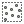

Části modelu¶
Název a skupina¶
Před samotnou tvorbou modelu je vhodné zadat název a skupinu modelu
(Obr. 62) a uložit jej  . Potom
můžeme model při jeho tvorbě průběžně ukládat.
. Potom
můžeme model při jeho tvorbě průběžně ukládat.
Obr. 63 Zadání jména a skupiny modelu.¶
Vstupní parametry¶
Obr. 64 Značení vstupního parametru v modelu.¶
Prvním krokem při tvorbě modelu je vložení vstupních parametrů. Tyto parametry jsou stejné jako u běžných algoritmů - vrstva, rozsah vrstvy, číslo, text, boolean (formou checkboxu) atd. Při spouštění vytvořeného modelu bude požadováno vyplnění vložených vstupních parametrů. Tyto parametry potom budou vstupovat do konkrétních algoritmů v modelu.
Obr. 65 Možné vstupní parametry.¶
Jednotlivé parametry lze do modelu přidat tažením nebo poklikáním. Po přídání se objeví dialogové okno, které je u většiny parametrů jednoduché. Základní položkou je zde název parametru. Nastavení parametrů v modelu lze průběžně měnit kliknutím na symbol tří teček, nebo lze parametry odstranit kliknutím na křížek (Obr. 64).
Obr. 66 Dialogové okno při vložení číselného parametru.¶
do našeho modelu přidáme vstupy Rozsah a Číslo. Pojmenujeme např. Rozsah a Počet bodů, později můžeme podle potřeby změnit.
Algoritmy¶
Obr. 67 Značení algoritmu v modelu.¶
Hlavní součástí modelů jsou algoritmy. Nalezneme zde většinu algoritmů, které jsou v okně nástrojů zpracování.
Obr. 68 Možné vstupní algoritmy.¶
Algoritmy se přidávají do modelu opět tažením nebo poklikáním. Po přidání se otevře dialogové okno konkrétního algoritmu (Obr. 70). Zde máme možnost nastavit výchozí hodnoty parametrů algoritmu, se kterými se bude počítat při spuštění modelu. Jesltiže chceme mít parametry při spouštění modelu volitelné je třeba nakonfigurovat odpovídající vstupy (Obr. 71). U číselných hodnot lze kromě pevě nastavené hodnoty a hodnoty vstupu, požít také předpočítanou hodnoty pomocí vzorce nebo hodnotu z výstupu jiného algoritmu (Obr. 69).
Obr. 69 Možnosti vstupu hodnot u číselných parametrů.¶
Obr. 70 Dialogové okno algoritmu s pevně stanovenými parametry.¶
vložíme algoritmus Náhodné body v rozsahu a jako vstupní rozsah zadáme náš vstupní parametr Rozsah. U počet bodů nastavíme hodnotu pomocí Model Input a vybereme vstupní parametr Počet bodů. Minimální vzdálenost a výstupní soubor měnit prozatím nebudeme, potvrdíme parametry tlačítkem OK.
{kind=link}
Obr. 71 Nastavení parametrů na základě vstupů do modelu.¶
Nastavení algoritmů v modelu lze průběžně editovat kliknutím na symbol
tří teček nebo lze algotritmy odstranit kliknutím na křížek. Také lze
použít tlačítek + a - pro náhled propojení vstupů a výstupů.
Obr. 72 Nastavení volitelných parametrů algoritmu Random points in extent při spouštění modelu.¶
Jednotlivé algoritmy lze na sebe dále navazovat - to co je výstupem z jednoho algoritmu může nějakým způsobem vstupovat do algoritmu druhého (Obr. 73).
Vložíme do modelu algoritmus
 Obalová zóna.
Jako vstupní vrstvu nastavíme ‚Náhodné body‘ from
algorithm ‚Náhodné body v rozsahu‘ a dále nastavíme
libovolnou fixní vzdálenost v metrech.
Obalová zóna.
Jako vstupní vrstvu nastavíme ‚Náhodné body‘ from
algorithm ‚Náhodné body v rozsahu‘ a dále nastavíme
libovolnou fixní vzdálenost v metrech.
Obr. 73 Náhodné body vygenerované Random points in extent použité jako vstup pro vytvoření obalových zón.¶
Pravým kliknutím na algoritmus v modelu můžeme vyvolat kontextové menu, ve kterém můžeme algoritmus vymazat, deaktivovat nebo spustit jeho editaci (Obr. 74).
Obr. 74 Kontextové menu algoritmu v modelu.¶
Výstupy¶
Obr. 76 Značení výstupu v modelu.¶
Výstup slouží k vytvoření souboru (vrstva, HTML stránka atd.). Může sloužit jako vlastní konečný výsledek modelu, ale také lze nastavit výstupy průběžně u jednotlivých algoritmů. Výstup se konfiguruje u každého algoritmu zvlášť, stačí zadat název výstupu do textového pole ve spodní části dialogového okna algoritmu (Obr. 77). Všeobecně, a především při generování více výstupů, je vhodné zvolit smysluplný název podle toho jaký je obsah dat nebo co nám data sdělují.
Obr. 77 Dialogové okno algoritmu - pole pro zadání názvu výstupu.¶
Otevřeme (editace) algoritmus
Obalová zóna
zadáme libovolný název finálního výstupu (např. Výstup).
Zadáním jména do textového pole pro výstup, nastavíme model, aby vytvořil výstupní soubor. Pokud pole necháme nevyplněné, model žádný soubor nevytvoří. Výsledek algoritmu však může dále sloužit jako vstup pro jiné algoritmy.
Obr. 78 Model, ve kterém bude výstupem vrstva obalových zón.¶
Obr. 79 Ukázka modelu z více výstupy.¶